The idea of automatically generating content and sharing content is something that has intrigued me in the past years. With the recent developments in AI language models this now seemed very much possible. As an experiment, I created a program that can automatically generate and publish blog posts. I also experimented with creating a program that can generate short form videos and post them automatically on Youtube.
To create the blog posts, I used the API from OpenAI to generate the content, including meta information like tags, a summary and an image description. I then fetch an image based on the description through the pexels API and upload the post using the API of wordpress.
For the topic of the blog, I decided to go with a music related theme. This seemed like a topic that wouldnt be harmful if it provided the occasional wrong info. The blog can be found here
I am especially interested in the questions that this technology raises. We're reaching a point soon, where most of the content on the internet will be generated (with the help of) AI. I assume imperfection will become one of the main ways to prove authenticity. Meaning that soon, people will only care about your content if it doesn't have blurry images and spelling mistakes, which I think is a funny thought.
Embodied music controller
Completed in: August 2021
For the graduation project of the master interaction technology at the University of Twente, I developed an embodied music controller that makes it possible for producers to perform their material using gestures and movements. This way audio clips and parameters can be triggered and adjusted in a way that feels more satisfying for the performer and more engaging for the audience.
I created three wireless devices which transmit data from an IMU sensor to my laptop. the software is able to distinguish between different gestures using machine learning (an RNN LSTM) and is able to send out the corresponding musical information (MIDI) to a DAW
This system has been co-developed with music producers and dancers. The transparency and engagement of a performance given with the controller has been evaluated with an audience. Results show that both performers and audience are excited about this technology being used
For more information you can access the thesis here
Waveshape
Completed in: July 2020. Team members: Jelle Hamoen
The challenge of this research project was to create a tool that can generate a 3D shape based on the emotional quality of a song. A website was created that connects to a Spotify API that retrieves the valence and arousal of any song. This information was used to automatically generate a torus-like shape that corresponds to these parameters.
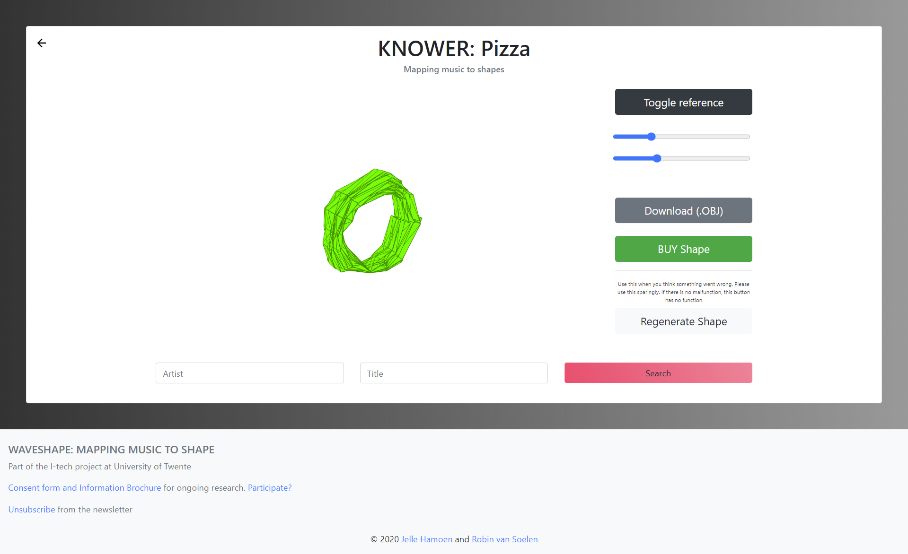
Internship SoundLab
Completed in: December 2019
I did an internship at the SoundLab in Enschede. This is a new workshop space in Enschede that is being designed for children to experiment and play with sound. Together with music teacher students I designed and created three prototypes which are explained below.
Project 1: Singing game
This game can be best described as a combination between singstar and flappy bird. The concept of the game is to use the pitch of your voice to control the height of a flying zeppelin. The goal is to avoid obstacles and collect items. Throughout the game the scenery changes and audio effects that correspond to that scenery are added to the voice (for example: delay in the mountains). I created a functional prototype in Max MSP.
I also created a dashboard for teachers so that they easily could adapt the difficulty and vocal range to each student.
Afterwards, a group of computer science students adapted this design into a web based application
Project 2: Interactive floor
The second project I created during this internship made use of an interactive floor that is displayed in the DesignLab at the University of Twente. This system uses kinect sensors to measure the position of users within a room and uses two beamers to project these locations onto the floor.
Using Unity and Fmod I created an application that uses this floor to let people get familiar with musical styles. In this application four vinyls are projected onto the floor. Each vinyl corresponds to a certain genre of music. When a user steps onto a vinyl an audio loop of that genre starts playing. Each user has the possiblity to "become" the rythm, bass, melody and harmony section, which determines the type of audio loop that starts playing.
The application was evaluated with a group of children who were very enthousiastic about the system.
Project three: Music glove
During the third project of this internship I experimented with using IMU sensors to control musical parameters through movement. I added a light sensor to the palm of the hand to measure whether it was open or not.
I immediately became a fan of how natural this interaction with the glove felt and the amount of possiblities it offered. This project lay the foundation of the embodied music controller which I developed for my master thesis.
TerraTree
Completed in: July 2019. Team members: Chetana Pai, Suhaib Aslam, Zack Wilson and Rutger Frieswijk
The municapility of Enschede requested that we design an interactive experience in a graveyard called "het boerenkerkhof". This is a very old graveyard that now functions as a park where some historically important people of Enschede are buried. However, the park is not visited that often.
We chose to revolve this installation around a big tree that was positioned in the centre of the graveyard.
The concept was that this tree has roots going through the whole park and that when you pump energy into it,
it can tell you a story about person who is buried there. We created three devices which are used to transfer energy into the tree and select a story. A big button was placed on the tree to release this energy and play the audio story.
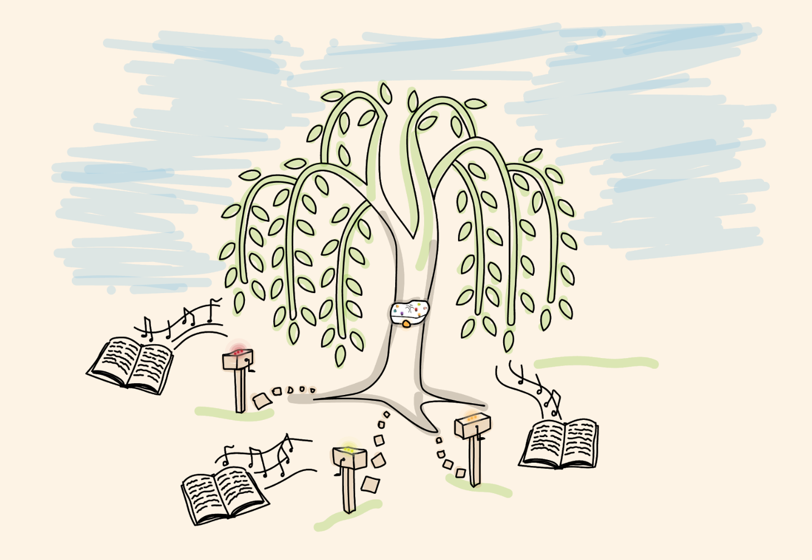
PentaSynth
Completed in: July 2018
This was my graduation project for the bachelor Creative Technology at the University of
Twente. It was made through an assignment given by music school Kaliber based in Enschede, The Netherlands.
The assignment was to develop a music workshop using modern technologies.
I chose to create a workshop with the aim of making children more aware of the different type of instruments
in
modern music. This was done through creating a new
type of instrument, called The Pentasynth.
The setup of the PentaSynth consists of 4 devices with each 5 buttons. Each device triggers a different type
of musical instrument.
One device plays the chords, one the melody, one the bass and one the drums. The notes of the melody and the
bass are being changed according to the chord that is being played. This allows children to play and
improvise together without having to worry about music theory.
I made the system working using arduinos hooked up to capacitive sensors. These signals were being translated
into the right MIDI information using Java and being sent to Ableton to play the sounds.
I tested the setup at several daycares in Enschede. Results showed that despite the setup being a lot of fun,
that the system created benefit when learning to recognise different types of instruments.
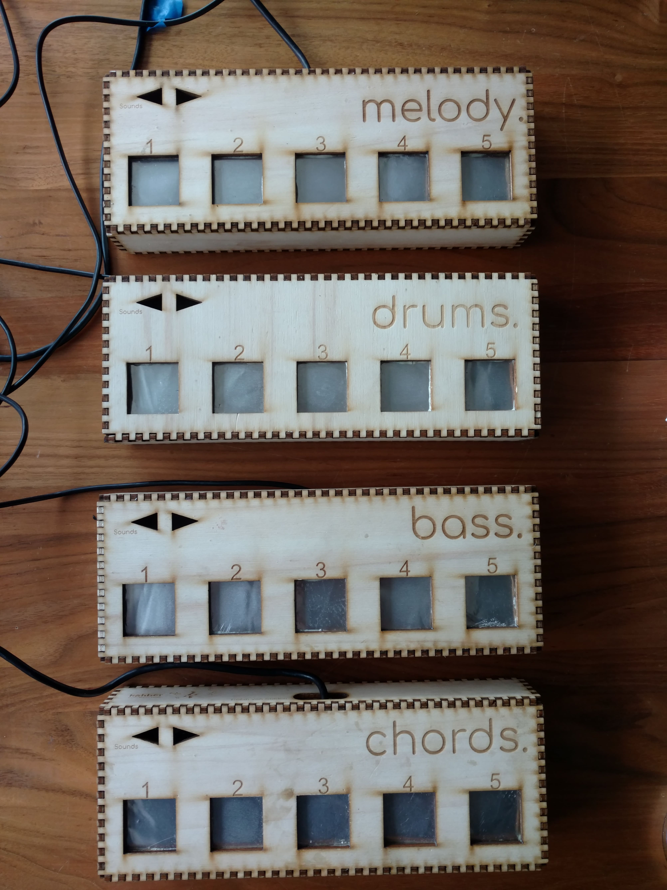
Drop by drop
Completed in: July 2017
This project has been made in a team of 15 people. The goal was to build an interactive data physicalization. This has been done through visualizing earthquakes in the dutch province Groningen over time. When doing this, the impact of gas drilling which is done in this province will become visible.
The physicalization is being done by letting droplets of water fall on a water bin under which the map of Groningen is projected. The droplets fall on the location of the earthquake. The ripple effect of the droplet creates a nice visualisation of an earthquake. The system is made interactive by a wheel which can be turned to go through the time.
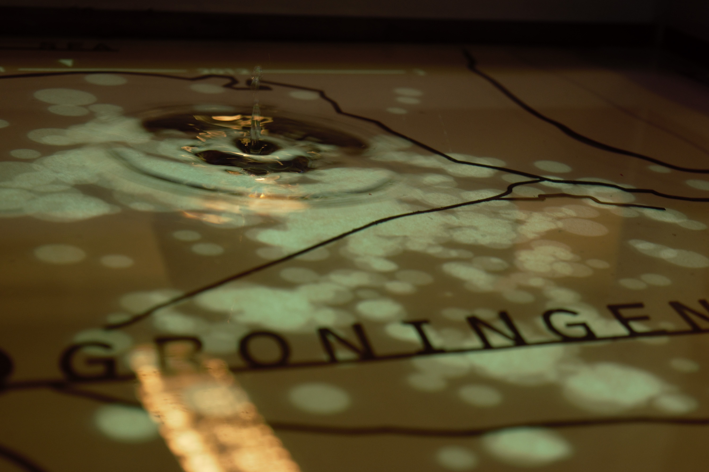
Together with Oliver Horst, my task during this project was to build an XY plotter which would take a coordinate and move towards there. This has been built using several stepper motors and an Arduino.
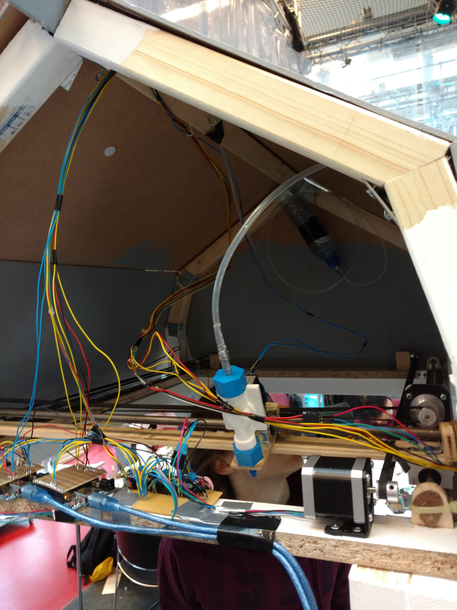
Data visual of tornadoes in the USA
Completed in: June 2017. Team members: Oliver Horst, Sjoerd Baarslag
This is a project made for a course on datavisualisation. It was a group project with the freedom to create
any data visualisation. We chose to visualise tornadoes in the USA. The result is visible here
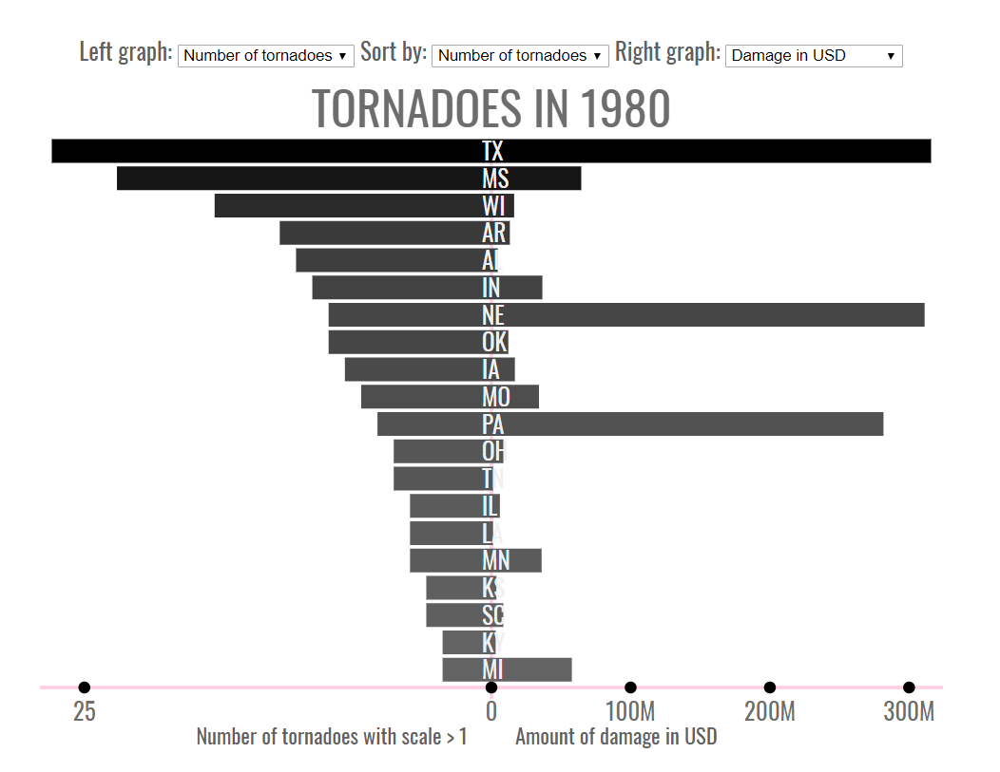
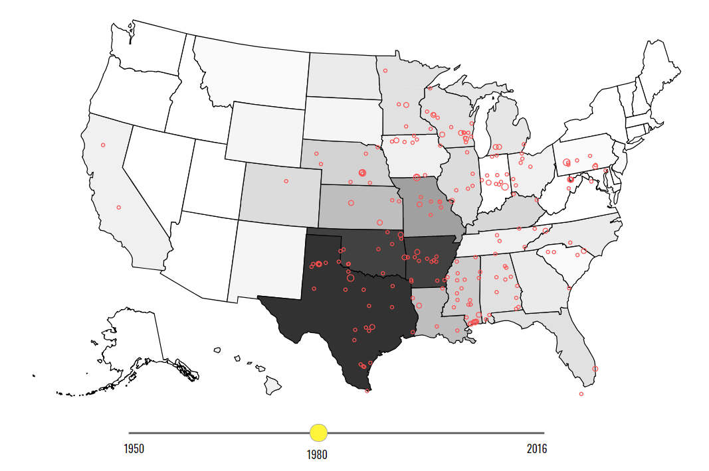
Stafel
Completed in: April 2017. Team members: Oliver Horst, Sjoerd Baarslag, Thijs de Kleijn
This project has been developed through an assignment of the Roessingh Revalidation Centre based in
Enschede. Roessingh needed a new way to motivate patients recovering from a broken hip to do their
exercises.
The solution we came up with was an interactive installation located in the common room of the development
centre. This allowed the patients to do their exercises together, while taking a walk through the park.
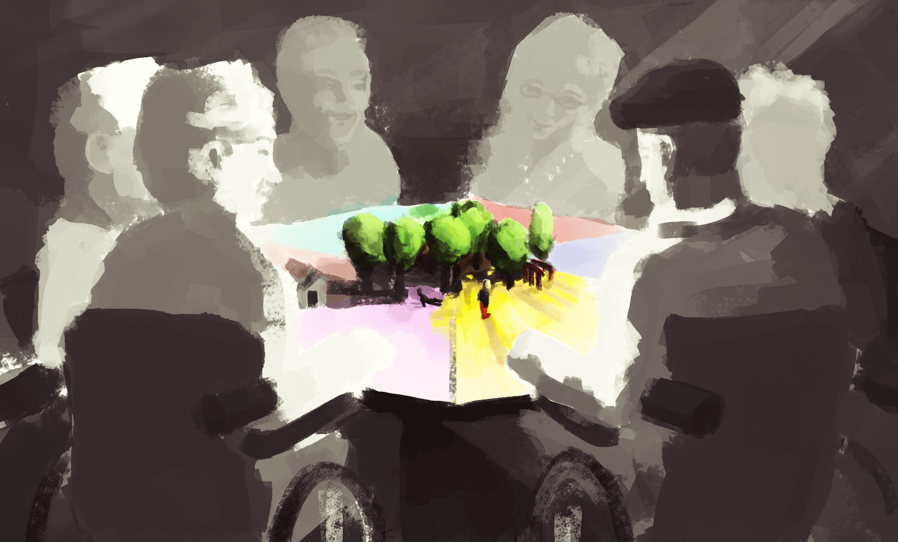
The interaction with the system is going in turns. This is being made clear through a character who walks
around the park and moves a bit after each movement. LED's make clear who's turn it is.
This concept has been turned into a functioning prototype. Due to time constraints, only on one user and one
exercise is focused. The prototype is made using two arduino’s. One for controlling the motor which is used
to move the guy around the park, and one to sense if the exercise is being done. This sensing is being done
using distance sensors.
The guy is 3D printed and moving over the surface using a magnet.
BlandaBand
Completed in: January 2017. Team members: Oliver Horst and Sjoerd Baarslag
This prototype was build as part of a business module at the University of Twente. It is still one of my favorite projects I worked on.
The emerging of music streaming services like Spotify, Apple music and Youtube music has created the ability
to have instant access to almost every song imaginable. Due to this, the feeling of actually owning music
has been fading away. Every album is at your fingertips while none of them can actually be touched.
This project creates change by making music tangible again. The blandaband is a music player on which the
user can put music cards which link to playlist/album/song on a streaming service. What music is on the
cards and what they look like is up to the user, since these can be created and ordered online.
To test this concept, a fully working prototype has been made. The prototype is working through a Raspberry
pi which is running “pi musicbox” to be able to stream from Spotify. The cards are being recognised using an
RFID reader. The cards have an implemented RFID chip.


 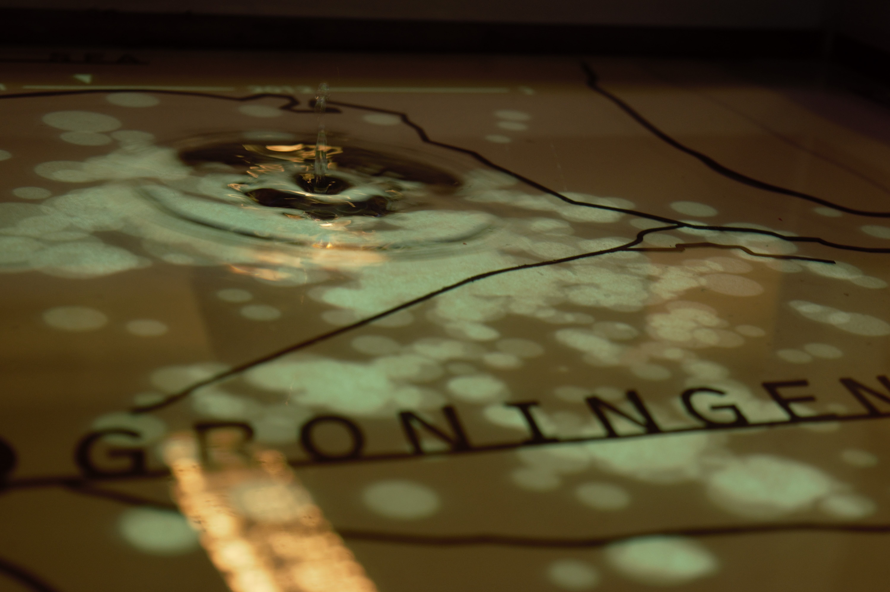
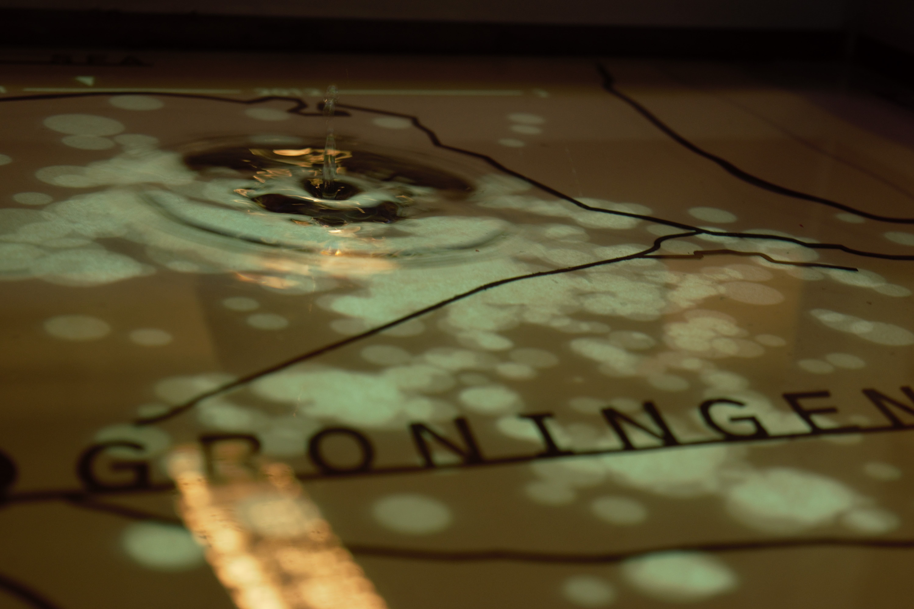


 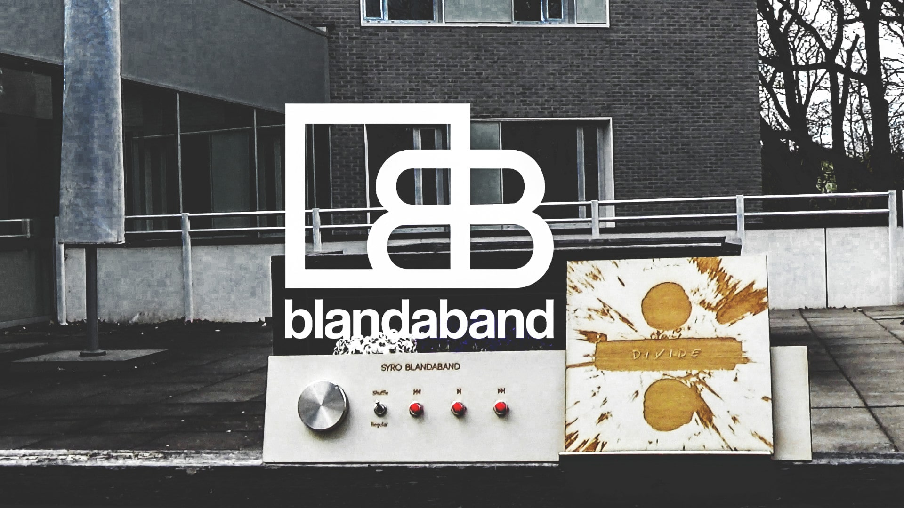
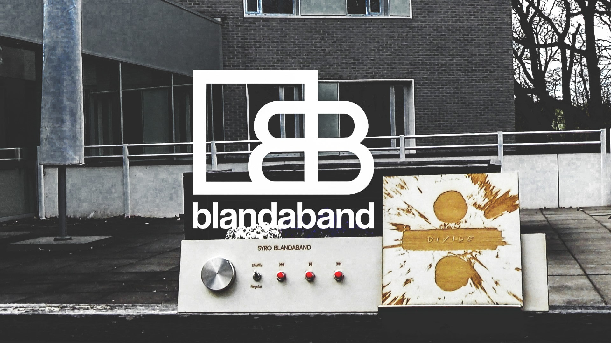